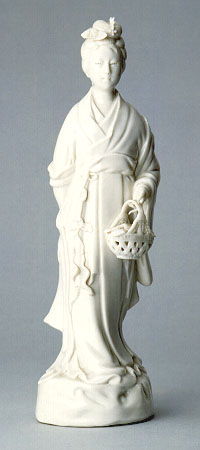

義助慰安婦 —— 李敖百件珍藏義賣藝術品（第50件） 品 名：D4. 魚籃觀音 預估價：2 萬 成交價：14 萬 說 明： 大陸近代所製磁像，為李敖友陳平景先生所贈。此觀音面貌肅穆、端莊、可愛，雖不名貴，但卻少見，因其提籃中有魚，故名魚籃觀音。像內並附有陳平景先生題贈之字。 
大陸近代所製磁像，為李敖友陳平景先生所贈。此觀音面貌肅穆、端莊、可愛，雖不名貴，但卻少見，因其提籃中有魚，故名魚籃觀音。像內並附有陳平景先生題贈之字。